K210 如何在 Mixly 上实现积木编程
Mixly 是什么？
Mixly（米思齐）是国内自主研发且免费开源的一款图形化编程软件，用户可以通过拼接积木块的方式来编写程序。目前为止 Mixly 已支持 Arduino/micropython/python 等编程语言。
说明
Mixly 支持基于 K210 主控的 Maixduino 等开发板，可满足对于 K210 实现积木编程有兴趣的用户。
这篇 Mixly 的基础使用指南供小伙伴们参考，与 SIPEED 一起遨游于新奇的积木编程世界吧！
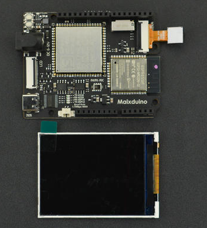
使用流程
器材准备
环境准备
使用之前需要先给 Maixduino 开发板烧录固件方便我们后续使用。
MaixPy 固件包：点击前往下载
Kflash_gui 烧录工具：点击前往下载
MaixPy 烧录固件教程：点击前往查看先把我们准备的开发板接入
PC端打开我们安装成功的 Mixly 软件，然后在软件下方的操作栏右侧选择相应的Maixduino设备，操作完后点击上传连接设备。
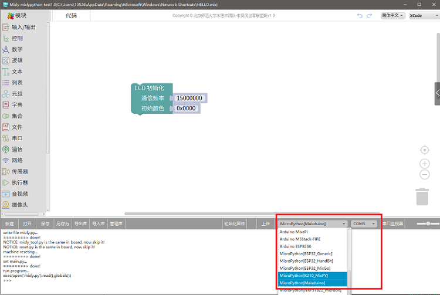
上传成功调试信息框会弹出以下日志：
write file mixly.py...
========> done!
NOTICE: mixly_tool.py is the same in board, now skip it!
NOTICE: reset.py is the same in board, now skip it!
machine reseting...
========> done!
set main.py...
========> done!
run program...
exec(open('mixly.py').read(),globals())
>>>
注意：如有上传失败现象请检查接线是否正确？是否烧录基础固件？或使用 Kfalsh_gui 整片擦除重新烧录基础固件。
界面介绍
界面介绍转载了 Mixly 官方文档：点击查看原文链接.
Mixly 软件主要分成图形化程序选择区、图形化程序编辑区、代码预览区、系统功能区、消息提示区。
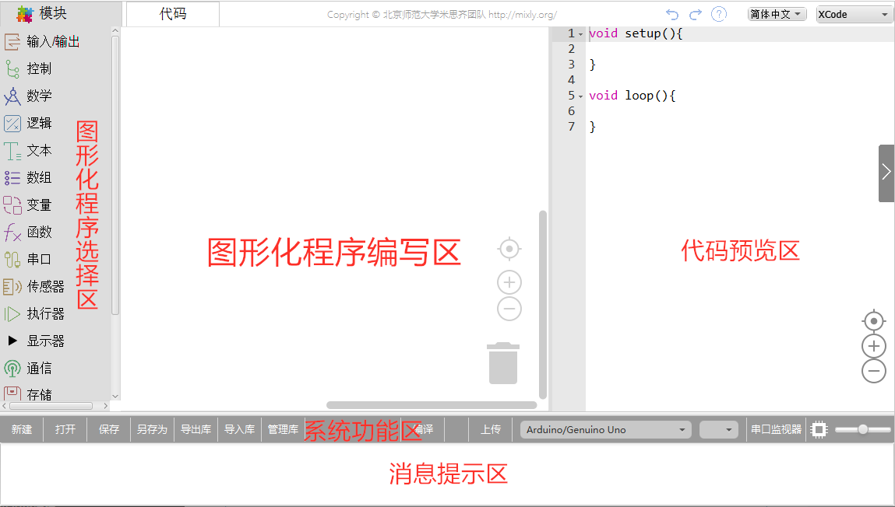
图形化程序选择区
图形化程序选择区中包含了各类图形化程序，每一个类别中都包含多个图形化，通过将这些图形块拖动到图形化程序编辑区就可以完成编程。
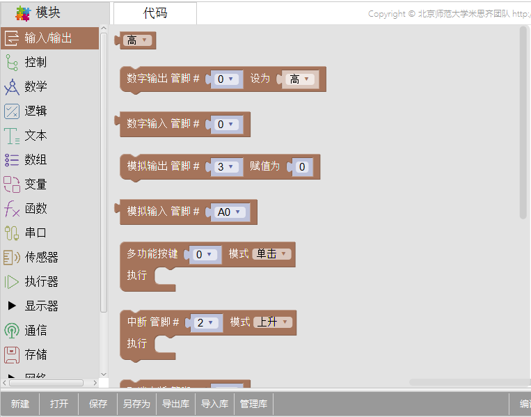
程序编写区
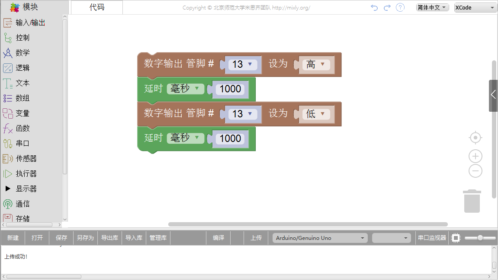
- 程序编写
我们通常把能完成一定功能的代码块拖动到该区域处进行连接。
- 程序删除
- 将不需要的代码拖到右下方的垃圾桶。
- 将不用的代码拖到最左侧的图形化程序选择区。
- 选中不用的代码后点击键盘
Delete或者Backspace键。
- 程序缩放
右下角垃圾桶上方有缩放按钮
- 第一个按钮是图形块大小正常化并居中。
- 第二个是放大图形块。
- 第三个是缩小图形块。
当然也可以直接使用鼠标滚轮进行缩放。
- 程序整理
当编写的程序比较多时，需要对程序进行整理，在空白区右击选择清理块。
系统功能区
系统功能区主要执行的功能有新建、打开、保存、另存为、导出库、导入库、管理库、编译、上传、选择主控板型号及端口、串口监视器及软件界面放大缩小等功能。
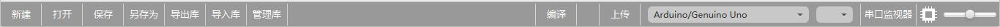
- 库功能
为了方便用户使用及代码分享 Mixly 特增加了库功能。库功能分别包括：导出库，导入库以及管理库。
当用户编写完一段代码后（比如语音播报），代码可集成在一个函数中（假设该函数为 sayNum）只需要点击导出库并给该库起个名字便能使用。
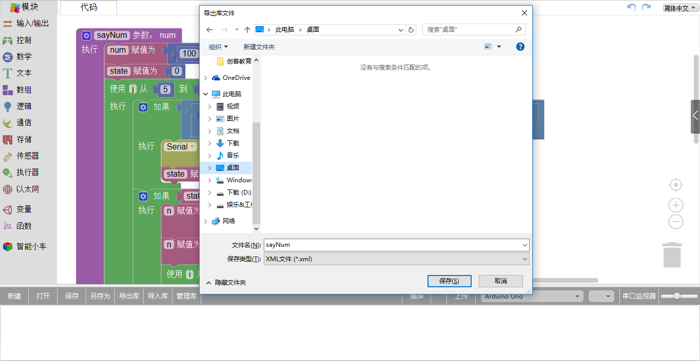
保存后就可以将该库上传至平台，供其他用户下载进行使用学习。
下载该代码后可直接将该库进行导入并使用，并点击导入库可找到该文件的位置。
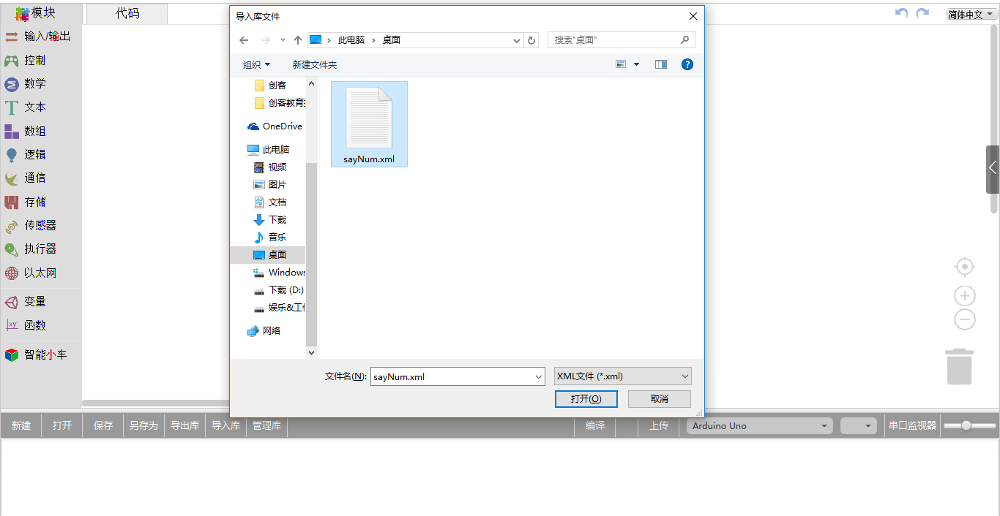
导入后界面会刷新，请耐心等待 1-2 秒便可在模块选择区见到新导入的库。同时在消息提示区也会提示“导入自定义库成功”接着可直接点击 sayNum 库，将指令拖入程序构建区调用该函数即可。
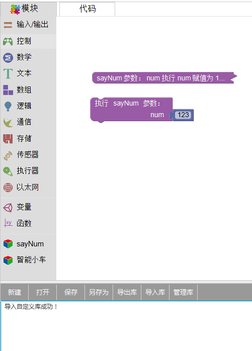
管理库的功能是可以对已导入的库进行重命名、删除和打开目录。
消息提示区
消息提示区通常是给用户信息反馈的场所。比如编译或上传进程中，编译或上传是否成功？
如果失败原因是什么？或者是导入库是否成功等消息。
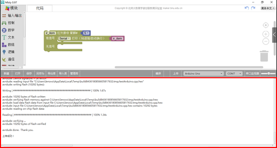
编程使用
从图形化程序选择区拖动板块编写程序，在屏幕中显示摄像头画面，程序拼接完成后点击上传即可运行.
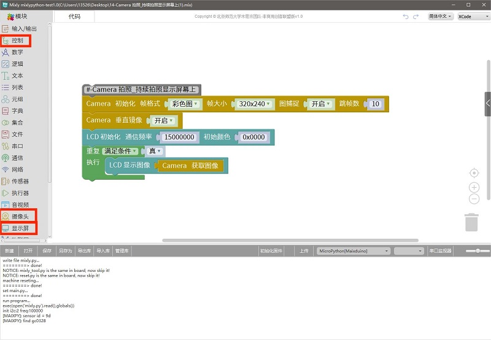
可在我们接入的设备上看到摄像头运行的的效果。
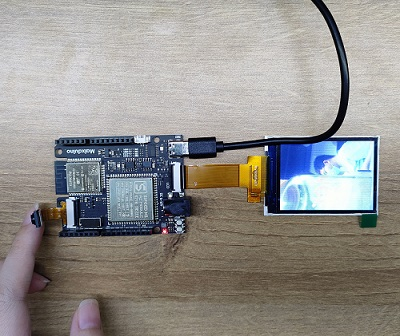
代码编辑
除了可拖动的图形化区域还有代码可编辑区域，我们也可以在编写代码并点击上传运行即可。
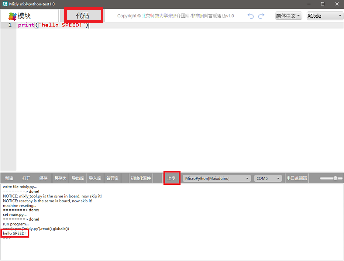
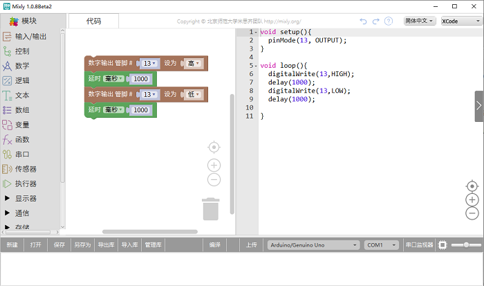
相关教程
来自社区大佬 hockel 的系列教程